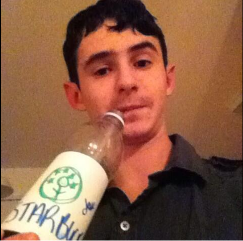

"Nobody important? Blimey, that's amazing. Do you know that in nine hundred years of time and space, I've never met anybody who wasn't important before." - The Doctor
About Me

Hello there, and welcome to my wonderful masterpiece of a website! (Opinionated) This website is where all the magic happens, including actual magic, like ponies, and rainbows, and... stuff. Yeah. Just believe what I just said. (It may be true. *mindblown*) I am a software developer of many languages, including but not limited to, Java, Python, HTML/CSS, and JavaScript. I am involved in a few organizations, including the Worlds Collide Network.
Projects
LinkFixerBot
LinkFixerBot is a simple Reddit bot that I made to allow easier access to subreddits for mobile users. Whenever a Reddit user posts a "broken" link to a subreddit, the bot will reply with the proper link.
JoinMessages
JoinMessages is a simple Bukkit plugin for the game Minecraft that allows you to setup easy custom join / leave messages when a player join or leaves the game. For more info, check the GitHub repository.
Apokalypse
Apokalypse is a hunger games style mini-game for the Minecraft implementation Bukkit. It is currently an early work in progress, but it is progressing rapidly. Check out the GitHub page for more info.